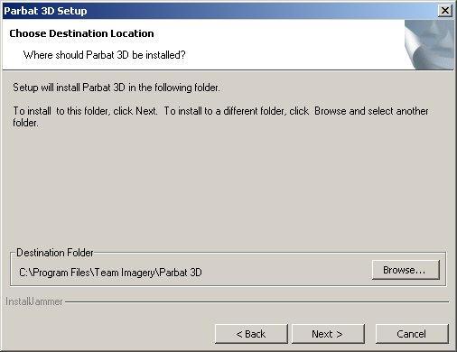

Parbat 3D uses common package distribution techniques to allow the installation of the most recent release to be as quick, and user-friendly as possible.
The most recent packaged release, project news, and development source can be found at the project website, along with any updated documentation, or other resources.
Once you have downloaded or otherwise obtained the package you wish to install, the process of installation is straightforward.
Double-click the package file to get started.
The first step is selecting the language to be used throughout installation. Please bear in mind that this only applies to the installation process, and not the program itself.
You will see a dialogue asking you to confirm that your intention is to install Parbat 3D on your computer.
Click "Yes" to continue, or "No" to abort.
You will then see the welcome splash screen to the installer, which will give you a little information about the program, in an interface style familiar to most sentient life forms.
Clicking "Next" at this screen will allow you to proceed to the licensing terms and conditions.
Parbat 3D is distributed under the terms of the GNU General Public License. This is a common Open-Source license, that assures your freedom to view and modify the source code of an application.
In order to proceed, you will have to accept the terms of the license agreement. If you do not agree to the terms and conditions of the license, use of this software is illegal.
You probably want to install Parbat 3D into the default directory, but should you be un-able or un-willing to do so, you will at this point be given the opportunity to select an alternate location.
Once you have selected a reasonable installation directory, please press "Next" to continue.